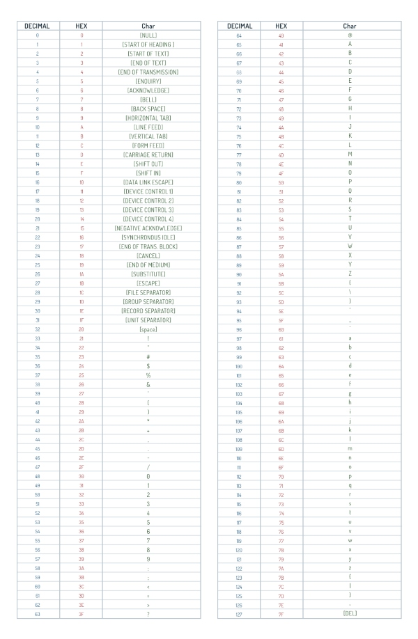

So, if all data on a computer is represented as binary, then isn't everything a number? We all read text on computers every day, so how does that work?
The text that is shown on the computer screen by a computer is read from storage as a binary number. The binary number correlates to a character, which is drawn on the screen. The exact correlations depend on the type of encoding that is used by the computer.
One common type of character encoding is ASCII, which stands for 'American Standard Code for Information Interchange'. It is a table that maps binary to characters. For example, the capital letter 'A' is 0x41, or 0b01000001. When the computer displays some text to you, if it sees a 0x41, it will show a capital A on the screen.
The original ASCII was 7 bits wide, so it supported only 127 characters (as (2^7) - 1 = 127). These days we often make use of extended ASCII which is 8 bits and therefore supports 255 characters.
ASCII Table
Here is the regular ASCII table:

Other Standards
There are other standards than ASCII, such as Unicode and UTF-8; however, ASCII is regareded as the simplest and one of the most common. Unicode supports a much larger character set so that languages which don't use the Latin alphabet can also be supported. Unicode encoding ends up using more data because you can't support the Chinese, Latin, Arabic, and Russian alphabets all in 255 spaces.